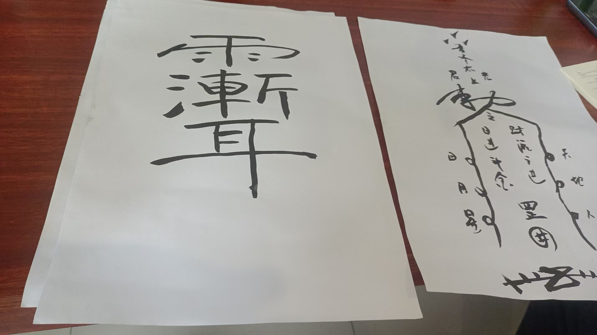

20260521符咒
符咒术法 原始对话记录
以下为编者整理的主题文章
编者整理 · 主题文章
符壳都一样，符胆随事
导读：这一页原本只有一张图。这里把记录里关于画符的话收一收。最要紧的一句是"符壳都一样，里面的符胆可以随机应变"——外壳固定，胆按要办的事改，事归谁管就写谁。墨用香墨，不用朱砂；黄表纸上、水里、空中都能画。
打开这一页，只有一张图。图是符的样子。字没有几行。我把它和别处的记录凑在一起，拼出一段。
道法里有三样东西：手印、符、咒。符是里头那个能拿在手上的。画符讲得最透的一句，是"符壳都一样，里面的符胆，可以随机应变"。外壳是固定的。里面的胆，按要办的事换。
孩子考学，胆里写"才思敏捷，高中状元"。催姻缘，写"月老和合，姻缘早成"。求财，写"财源广进，日进斗金"。消灾除晦气，就用对应的消灾符字。原则是一句话：事归谁管，写谁。太上老君、九天玄女、吕祖、玄武大帝、月老，各管一段。
工具也说了。墨用香墨，现在国画用的那种。记录里很少用朱砂。黄表纸可以。水里可以，空中也可以。心法只有四个字——意念为主。剑指放一层白光或金光，意想"金光闪闪"。
用起来两种。一种服水，画好喝下去。一种黄纸画了，在房间里烧化。也有人把符直接画到左手上，再隔空打到别人身上；打出去的时候，符越来越大，落到人身上。或者剑指在空中画好，隔几米推过去。
写到这里，我发现这一页真正短。一张图，一句口诀，剩下的都散在别的地方。像抽屉里只留了一颗钉子，柜子早搬走了。
说明与免责：本站为民间修炼、民俗文化与传统文化资料的整理与记录，内容源自传承者口传与个人修习体会，仅供文化交流与研究参考，不构成医疗、健康、投资或任何功效承诺。所述内容属传统术数范畴，请理性看待；如身体不适，请及时就医。请遵守法律法规与公序良俗。